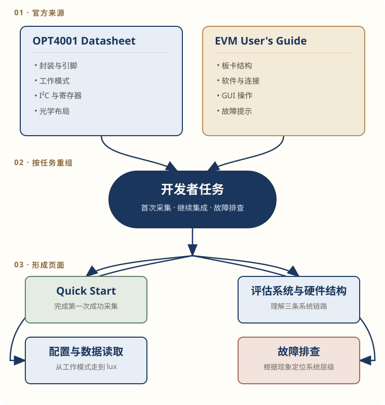
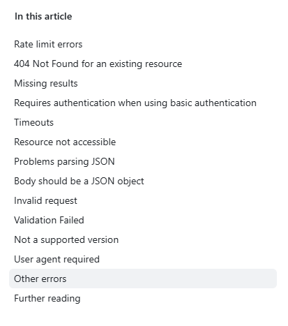
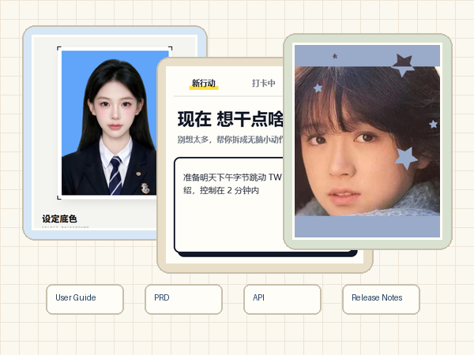

求职作品集 · 2026
梁卓雯 Zhuowen Liang
Technical Documentation Portfolio · 技术文档工程师｜深圳
电子信息硕士，围绕技术资料分析、信息架构和文档交付，持续完成硬件开发者文档、API 文档、产品文档与 Docs-as-Code 项目。
能够从 Datasheet、接口定义、产品流程和代码仓库中提取开发者真正需要的信息，再把它们组织成可以执行、查询和维护的文档。
Hardware DocumentationAPI Documentation
Product DocumentationDocs-as-Code
English Technical Writing
技术资料分析识别来源、事实与验证边界
→
信息架构按读者任务重组内容
→
文档交付让内容可执行、可查、可维护
Capability map
Documentation Capability Overview
四类能力都落在已完成的页面、仓库配置或可核对的资料来源上。
01
Hardware Documentation
- 输入
- Datasheet、EVM User's Guide、原理图、GUI 资料
- 处理
- 交叉核对器件事实，按首次采集和底层读取任务重组
- 交付
- Quick Start、系统说明、配置与读取、故障排查
02
API Documentation
- 输入
- 公开 REST API、Endpoint、命令行输出和错误信息
- 处理
- 拆分主路径与诊断路径，明确命令、可观察结果和通过标准
- 交付
- 英文 Quick Start、Troubleshooting、接口说明
03
Product Documentation
- 输入
- 小程序原型、产品流程、云函数和数据库边界
- 处理
- 按用户、产品和维护者三类任务组织信息
- 交付
- User Guide、PRD、System Flow、隐私边界和迭代记录
04
Docs-as-Code Workflow
- 输入
- Markdown 文档仓库与写作规则
- 处理
- 统一版本管理、本地检查、严格构建和发布条件
- 交付
- Vale + MkDocs + GitHub Actions + GitHub Pages 工作流
PROJECT 01 · HARDWARE DOCUMENTATION
OPT4001 EVM
Developer Documentation
TI 两份官方资料共 89 页。板卡结构、首次采集、I²C 读写、结果寄存器和故障信息分散在不同章节。
处理目标
不是缩短 Datasheet，而是按开发者第一次成功与后续调试任务重组。

从 Datasheet 与 EVM User's Guide 中提取信息，再按开发者任务形成四篇文档。
Quick Start完成第一次 lux 数据采集
System理解控制、电气与光学链路
I²C + lux配置、读取结果并换算 lux
Troubleshooting按现象定位问题层级
验证边界：器件事实与系统关系已按 TI 官方资料交叉核对；作者尚未使用真实 OPT4001YMNEVM 完成独立实物验证。
PROJECT 02 · ENGLISH API DOCUMENTATION
GitHub REST API
Documentation
使用公开仓库 alison2fun/tech-docs-portfolio 作为请求对象，把正常操作与故障诊断拆成两条连续路径。
完成标准
不仅发出命令，还要看到 HTTP 200，并核对仓库全名、可见性和默认分支。
Quick Start
- 提供 GitHub CLI 与
curl 两种方法 - 在关键命令后写明可观察结果
- 核对
full_name、visibility 和 default_branch
Troubleshooting
- 按终端中的真实症状进入诊断
- 区分参数解析、认证、连接、404 和限流
- 修复后返回 Quick Start 继续原任务

参考 GitHub 官方 Troubleshooting 的按症状检索方式。
curl8.14.1 请求已在 Windows PowerShell 中跑通
GitHub CLI2.96.0 安装与浏览器认证已检查
保留边界单行 GitHub CLI API 请求尚未重新运行
PROJECT 03 · DOCUMENTATION ENGINEERING
Docs-as-Code
Workflow
当前作品集本身就是这条文档工程工作流的运行对象。内容、规则、构建和发布配置都保存在同一仓库中。
发布条件
主分支先完成 Vale 检查和 MkDocs 严格构建，验证通过后才部署到 GitHub Pages。
 Markdown → Vale + MkDocs → GitHub Actions → GitHub Pages
Markdown → Vale + MkDocs → GitHub Actions → GitHub Pages
Version control
Markdown、配置和图片与代码一起进入 Git 版本历史，修改能够追踪和回退。
Automated validation
Vale 检查写作规则，MkDocs 使用严格模式构建；Pull Request 与主分支使用同一套仓库配置。
Continuous deployment
GitHub Actions 先验证文档。主分支通过后，部署任务再发布到 GitHub Pages。
PROJECT 04 · PRODUCT DOCUMENTATION
Product Documentation
Practice
以个人微信小程序为对象，主案例是把大任务拆成五个可执行步骤的“微步 ACTION”。文档把用户任务、产品判断和技术维护分开组织。
文档对象
用户如何开始、产品如何定义边界、维护者如何理解流程与数据去向。

User Guide
原型快速体验、创建与拆解任务、进度管理、常见问题和输入安全提醒。
PRD
产品问题、用户故事、功能状态、完成标准、异常边界和非目标范围。
User Flow & Maintenance
系统流程、云函数调用、数据库保存、数据与隐私边界、迭代记录和路线图。
这组文档把能够操作的原型继续补成可供不同读者使用的产品文档集：用户查操作，产品人员看需求与边界，维护者查流程和数据。